Kosmetisk tatuering i Göteborg med naturliga resultat
Laura Lindqvist har arbetat i skönhetsbranschen i över 20 år, varav de senaste 15 med kosmetisk tatuering. Hennes filosofi är resultat som ser ut som dina egna, även utan smink.
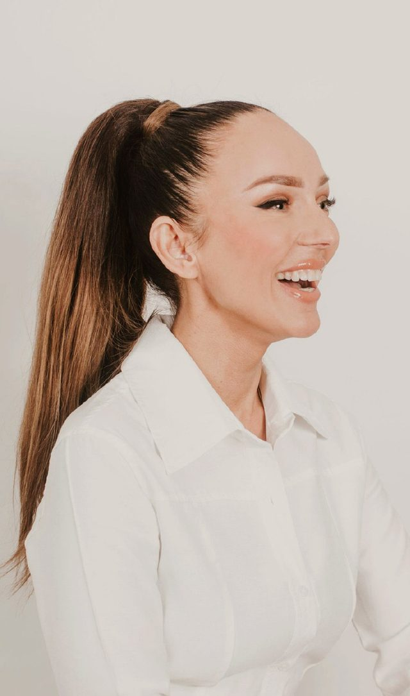
Laura LindqvistGrundare, PMU-artist och utbildare

- Sedan 2006Klinik och skola på Kungsgatan i centrala Göteborg
- 20+ åri skönhetsbranschen, 15 av dem med kosmetisk tatuering
- No Trauma-teknikLauras egen metod, utvecklad efter flera års tester
- PremiumverktygBiomaser, Kwadron, Permablend, LI Pigments, MAST och Cheyenne
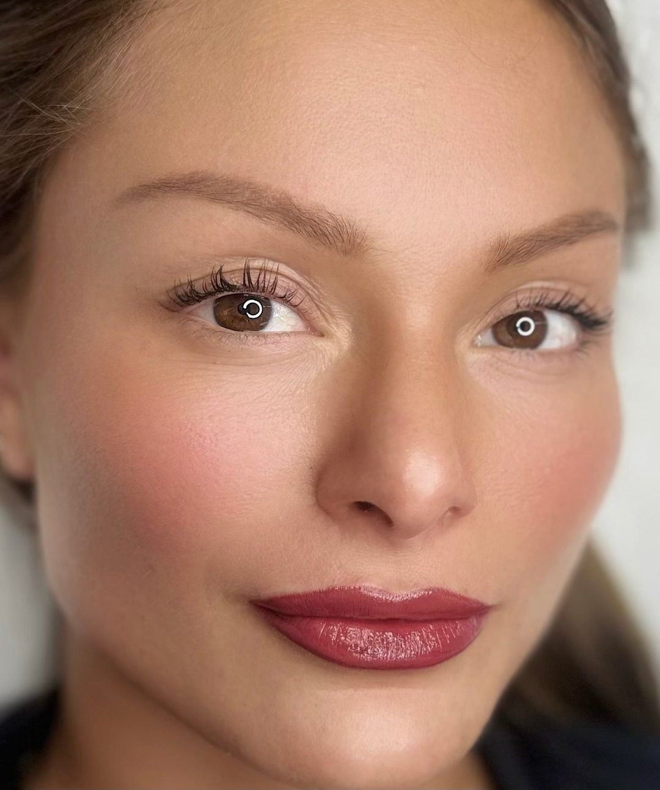
Behandlingar
Kosmetisk tatuering, microneedling, SMP, LIFT Ink Removal och fettfrysning.
Alla behandlingar PuderbrynStrokesLäpparFräknarLashlinerMicroneedlingSMPLIFT Ink RemovalFettfrysning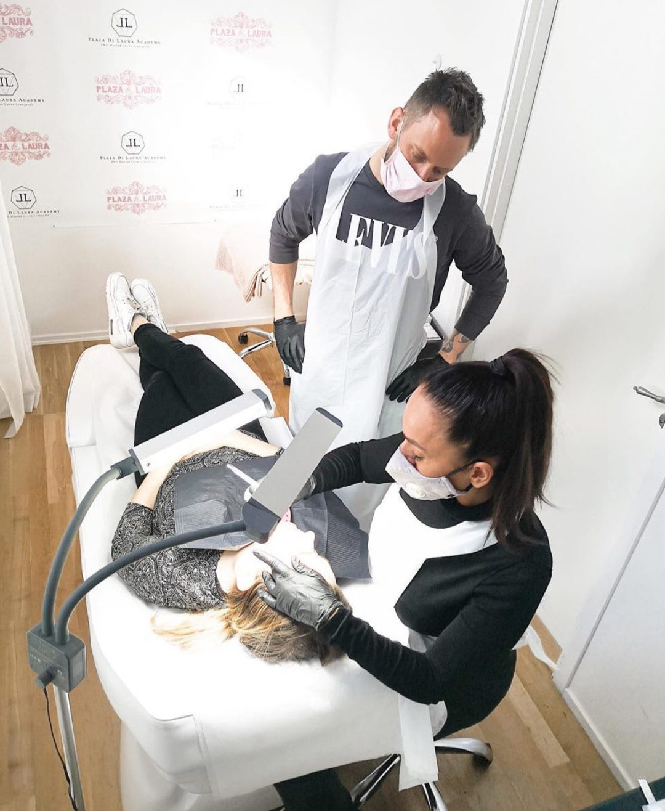
Plaza Di Laura Academy
Lär dig kosmetisk tatuering av Laura. Max 2 elever per kurstillfälle.
Se utbildningar Signature PMU Artist ProgramSignature Microblading ProgramFreckle Technique ProgramGrundkurs SMPGrundkurs MicroneedlingGrundkurs Ink RemovalKosmetisk tatuering som ser ut som din egen
Laura är emot kosmetisk tatuering som trendar. Form och färg anpassas efter din hudtyp, underton, hårfärg och dina ansiktsmått.


Hud, hårbotten och korrigering
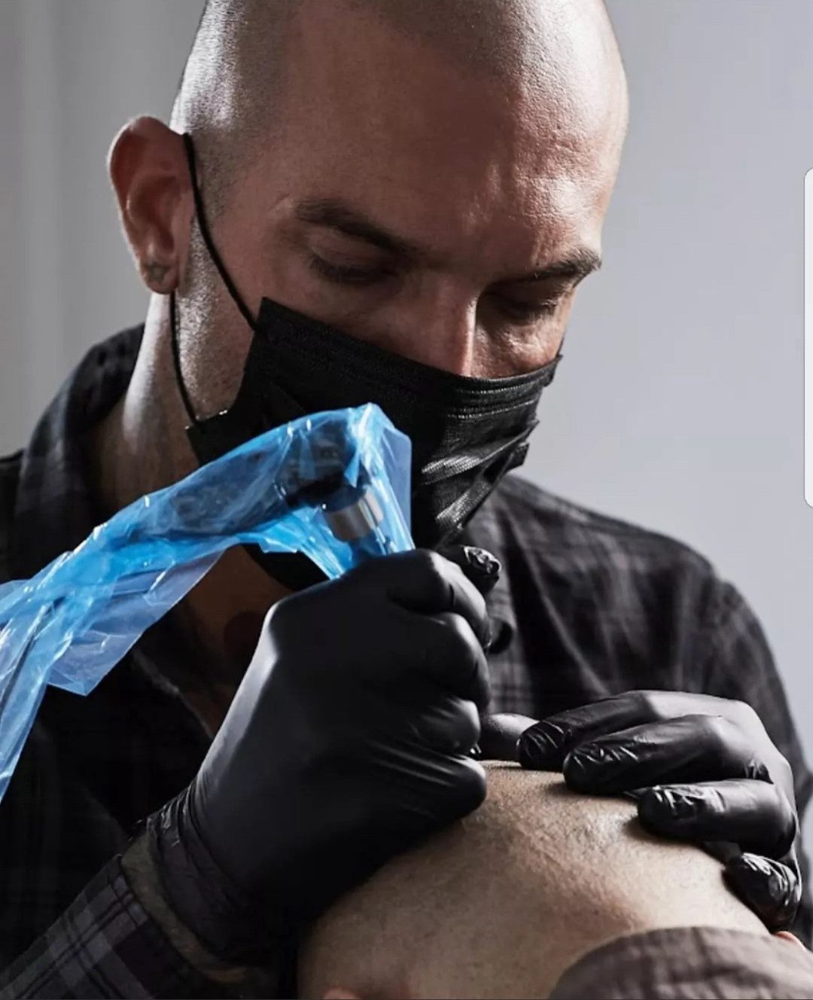
SMP
En avancerad behandling som skapar intryck av tätare hår genom realistiska pigment i hårbotten.
Läs mer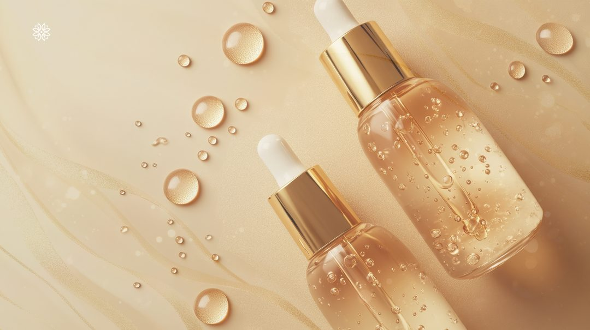
Microneedling
En hudföryngrande behandling där tunna nålar skapar mikroskopiska kanaler i huden för att stimulera kollagenproduktionen.
Läs mer
LIFT Ink Removal
En skonsam metod för borttagning eller korrigering av oönskad tatuering och permanent makeup, utan laser.
Läs mer
Fettfrysning
Proshock Ice™ kombinerar fettfrysning och stötvågsterapi för att reducera lokala fettdepåer och celluliter.
Läs mer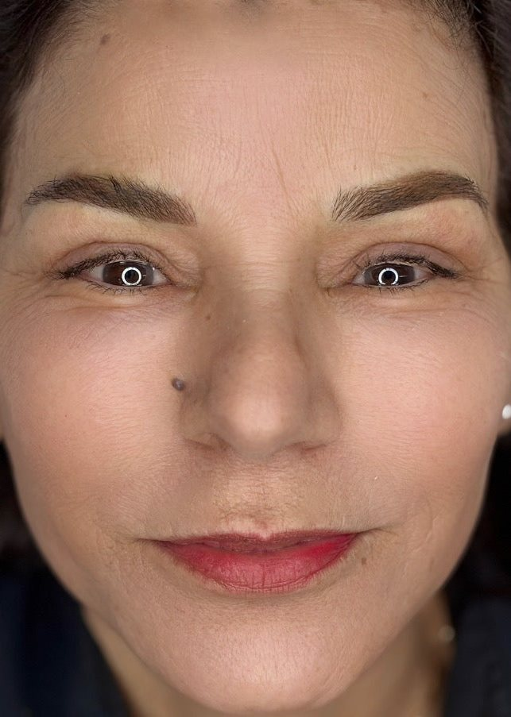
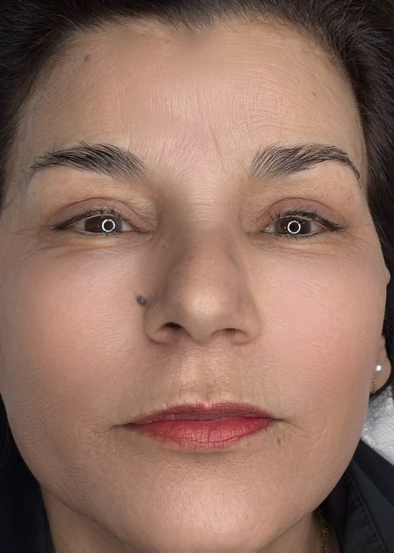
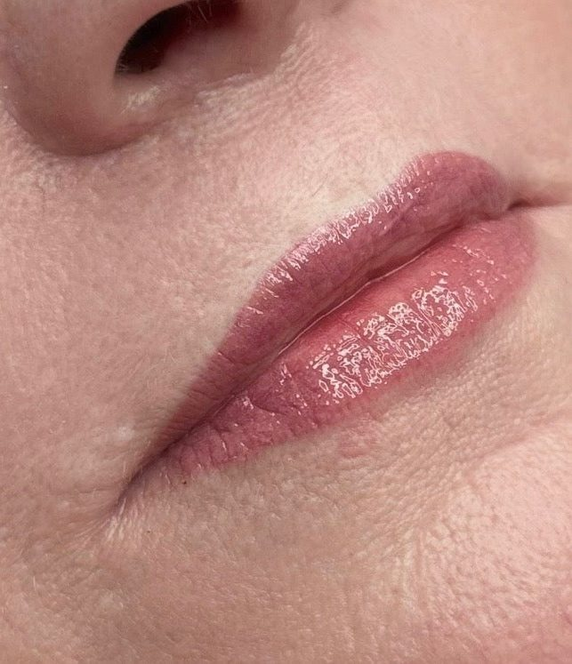
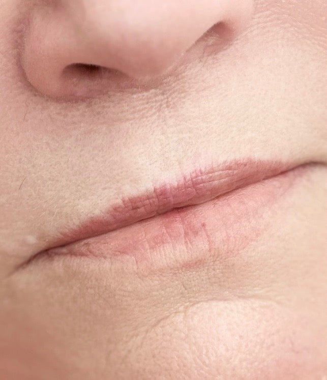
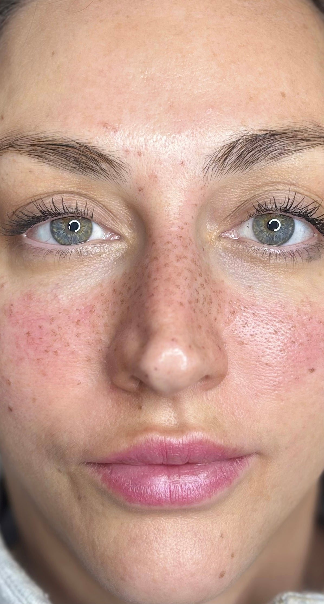
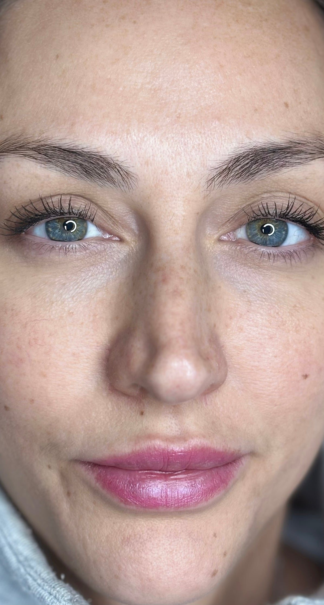
Dra och se skillnaden
Kunder fotograferade i kliniken före och efter behandlingen. Dra i reglaget för att jämföra.
Puder eller strokes? Hitta rätt brynmetod
Microblading passar inte alla. Svara på fyra frågor så får du en rekommendation byggd på Lauras egna riktlinjer för fet hy, porer, egna strån och gamla tatueringar.
Rekommendationen ersätter inte en bedömning. Laura går alltid igenom form och färg med dig innan behandlingen.
Före, direkt efter och läkt
Resultat från kliniken på bryn, läppar och fräknar, med Lauras egna bildtexter.
Utvecklad av Laura, för en fin läkning
Efter flera års praktiska tester av maskiner, nålar, pigment, hastighet, teknik och eftervård har Laura utvecklat sin egen metod. På grund av minimalt vävnadstrauma blir resultaten naturliga med en fin läkning.
- Ingen smärtaBedövningssalva före och under behandlingen
- Minimal svullnadOch inga blåmärken
- Ingen blödningTack vare minimalt vävnadstrauma
- Inga skorporUnder läkningen
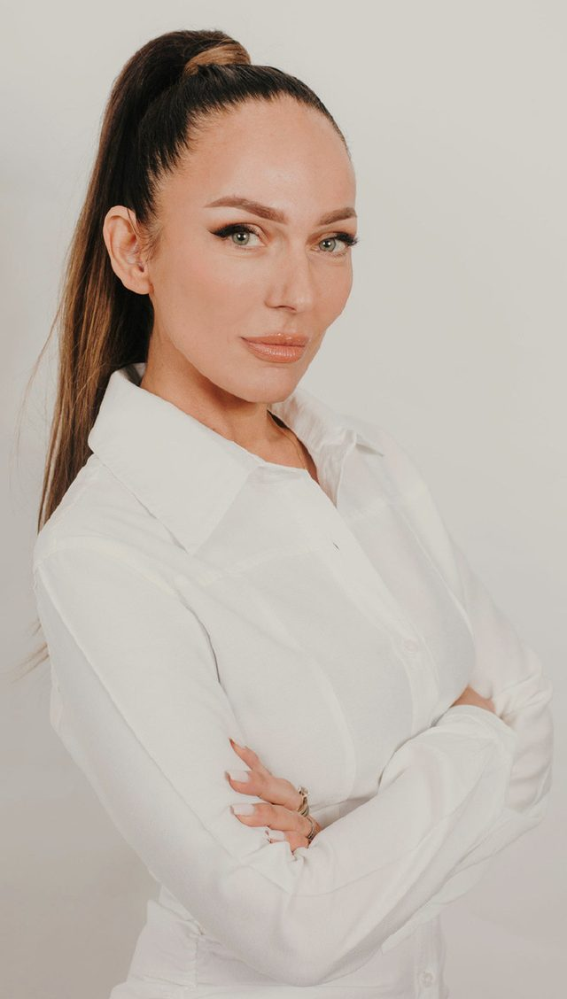
Jag tycker inte om nålar, men Laura trollar bort detta med sin proffsighet och humor.Susanna A.
Från konsultation till färdigt resultat
Gäller kosmetisk tatuering, till exempel puderbryn.
Kostnadsfri konsultation-
Konsultation
Kostnadsfri, på plats, per telefon eller via Zoom, om du är osäker eller har frågor.
-
Form och färg
Laura mäter och målar en form efter dina ansiktsmått. Ni väljer färg efter hudtyp och underton.

-
Behandling
Pigmentet läggs in i lager med en premiummaskin. Bedövning före och under.
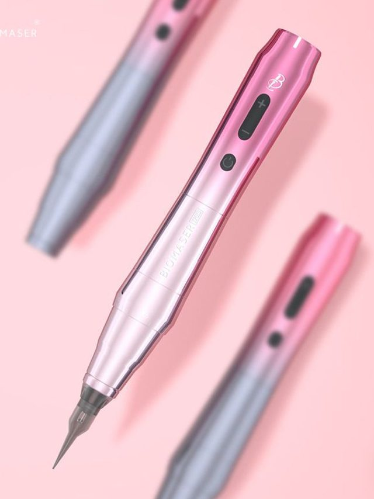
-
Återbesök
Efter ca 4 till 6 veckor för ett färdigt resultat. Eftervård ingår.
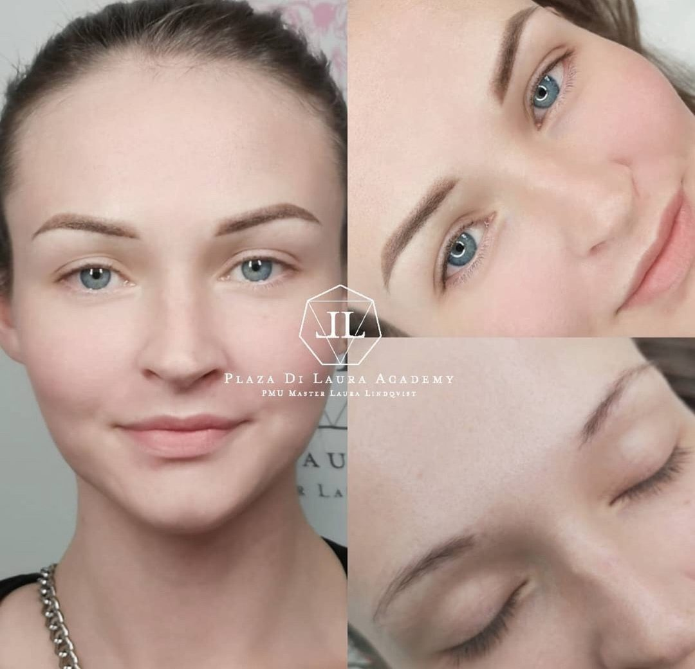
-
Refill
Inom 12 månader. Annars kan du låta tatueringen läka bort.
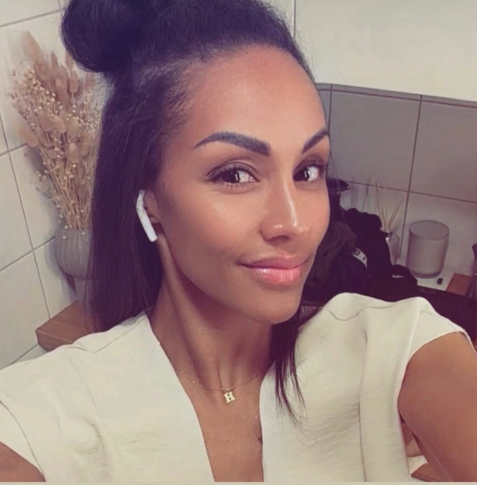

Vad kunderna säger
Proffsig, lugn & kunnig. Laura gör underverk, man känner sig bara wow när man har varit på denna salongen. Jag tycker inte om nålar, men Laura trollar bort detta med sin proffsighet & humor. Bästa!!
Finns bara ett ord: BÄST. Otroligt noggrann, tar sin tid, omtänksam, givmild, skicklig.
Man blir ompysslad, och så behagligt när man får bedövning för att slippa känna all smärta under behandlingen! Lyx!!
Gjorde microneedling för första gången och är väldigt nöjd med besöket. Hela upplevelsen var som att va på spabehandling. Gjorde inte alls ont. Känner mig fräsch, ny och fått en boostad hy. Älskar det! Jag kommer definitivt återkomma till denna behandlingen. Laura var som vanligt super professionell och gav mig all information jag behövde både innan och efter.
Alltid så nöjd! Faux fräknar som blev så fina
Fantastisk service. Alltid lika noggrann och proffsig!
Trevligt bemötande och omhändertagen på absolut bästa sätt!
Trevlig bemötande och ett fantastiskt resultat!
Alltid lika bra och avslappnat
Alltid så nöjd efter ett besök
Bäst i stan
Så nöjd!

Starta din karriär inom kosmetisk tatuering!
Lär dig en av världens mest efterfrågade behandlingar och bygg din egen lönsamma verksamhet, även som nybörjare!
- Signature PMU Artist Program5 dagar
- Signature Microblading Program4 dagar
- Freckle Technique Program3 dagar
- Grundkurs SMP
- Grundkurs Microneedling
- Grundkurs Ink Removal
- Ingen tidigare erfarenhet krävs
- Certifiering efter avslutad utbildning
- Praktisk träning på modeller
- Personlig coaching
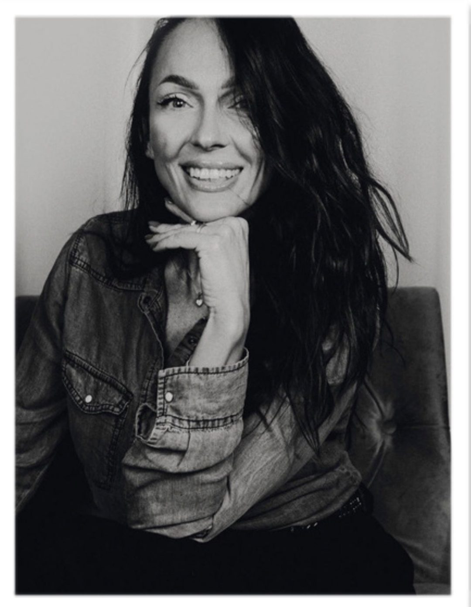
Laura Lindqvist
Grundare, PMU-artist och utbildare
Det här är inte bara mitt yrke, det är min expertis
Jag har arbetat med kosmetisk tatuering i över 15 år och har utbildat hundratals behandlare. Mitt fokus har alltid varit detsamma: precision, naturliga resultat och trygghet för varje kund.
- 2006Etablerat
- 15+År med kosmetisk tatuering
- 20+År i skönhetsbranschen
Klinik och skola mitt i Göteborg
- Adress
- Kungsgatan 11, Göteborg
- Konsultation
- Kostnadsfri, på plats, per telefon eller via Zoom
Kartan laddas från Google Maps först när du väljer att visa den.